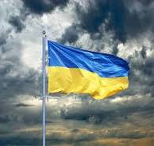
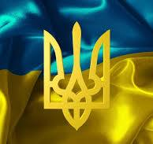

Історія України, її культура, суспільство, міста, села та природа сповнені див та приголомшливих фактів, які часом не знають і самі українці. Дізнайтеся більше цікавих фактів про Україну, які точно здивують вас
Вражаючі факти про культуру та історію України
Перша у світі конституція, в які окреслили права громадян та уряду, була розроблена та введена в дію у 1710 році українським гетьманом Пилипом Орликом. Для порівняння, конституція США, була розроблена і прийнята у 1787 році.
Дивовижні факти про природу та ресурси України
В Україні є свої Мальдіви – дивовижні пляжі з білим піском та прозорим блакитним морем. Знаходяться вони на понівеченому росією заповідному острові Джарилгач, що на Херсонщині. Зауважимо, що місцеві флора й фауна занесені до Червоної книги, а також тут раніше жили мустанги й верблюди
Найцікавіші факти про українців
Українець Юрій Бурдяк врятував життя Вінстону Черчиллю під час англо-бурської війни в Африці.. Тоді Черчилль потрапив у полон бувши звичайним журналістом, а Бурдяк, який був командиром одного з загонів бурів, врятував майбутнього лідера Англії від розстрілу
Факти та згадки про сучасну Україну
Українець Юрій Бурдяк врятував життя Вінстону Черчиллю під час англо-бурської війни в Африці.. Тоді Черчилль потрапив у полон бувши звичайним журналістом, а Бурдяк, який був командиром одного з загонів бурів, врятував майбутнього лідера Англії від розстрілу